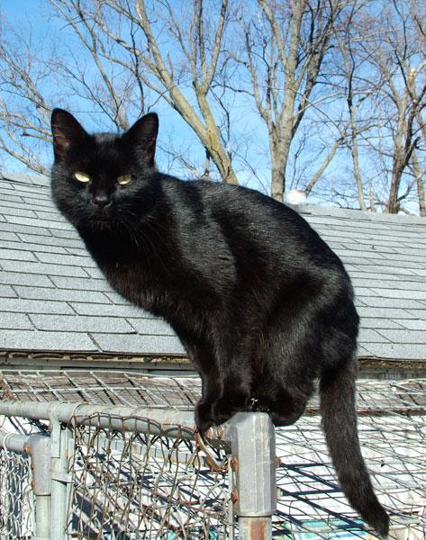
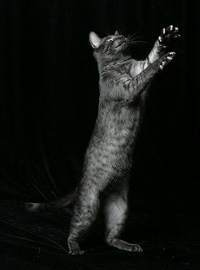
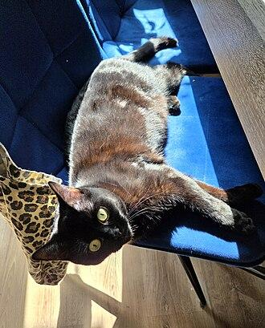
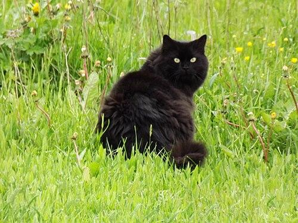
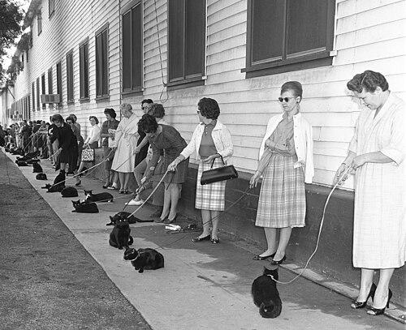
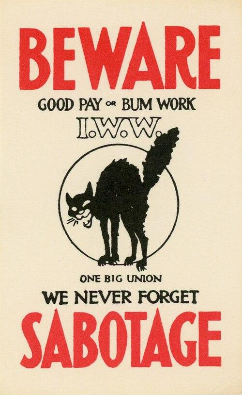
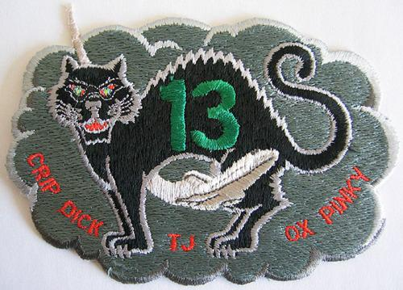
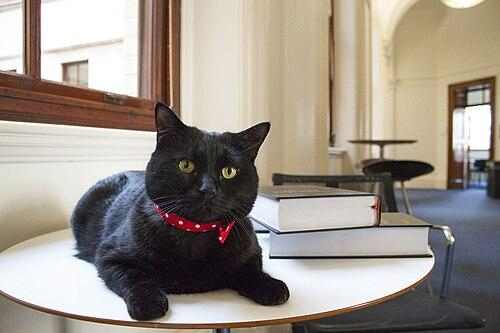

Black cat
Domestic cat with black fur

A black cat is a domestic cat with black fur. They may be a specific breed, or a common domestic cat of no particular breed. Most black cats have golden irises due to their high melanin pigment content. Black cats are the subject of mythology, legend, and superstition. They are often associated with witches and good or bad luck in European folklore.
The Cat Fanciers' Association (CFA) recognizes 22 cat breeds that can come with solid black coats. The Bombay breed is exclusively black.
Coat
See also: Cat coat genetics
Any cat whose fur is a single color, including black, is known as a "solid" or "self". A "solid black" cat may be coal black, grayish black, or brownish black. Most solid-colored cats result from a recessive gene that suppresses the tabby pattern. Sometimes the tabby pattern is not completely suppressed; faint markings may appear in certain lights, even on a solid black cat. A cat having black fur with white roots is known as a "black smoke".
Black cats can also "rust" in sunlight, the coat turning a lighter brownish-red shade. Eumelanin, the pigment required to produce the black fur, is somewhat fragile, so the rusting effect can be more pronounced in cats that frequently spend time in the sun. A rarer situation that can also cause rusting is a deficiency of the amino acid tyrosine, which is required to produce eumelanin.


In addition to the Bombay, the Cat Fanciers' Association allows solid black as a color option in 21 other breeds. The color description for those breeds is:
Black: dense coal black, sound from roots to tip of fur. Free from any tinge of rust on the ends. Nose leather: black. Paw pads: black or brown.
The exceptions are:
- Oriental – Ebony: dense coal black. Free from any tinge of rust on tips or smoke undercoat. Nose leather: black. Paw pads: black or brown.
- Sphynx – Black: black. One level tone from nose to tip of the tail. Nose leather: black. Paw pads: black or brown.
- Ragamuffin – Although black is not specifically mentioned, the standard allows for "any color, with or without white", so technically speaking, an all-black Ragamuffin would be allowed under the breed standard.
Historical associations
As a positive omen in Britain and Ireland

The superstitions surrounding black cats vary from culture to culture, and black cats have positive associations in the Celtic nations and England, where a black cat crossing one's path is considered good luck. In 2014, the animal welfare organisation RSPCA stated that "in UK folklore, black cats symbolise good luck". Scottish lore holds that a black cat's arrival at a new home signifies prosperity, while Welsh lore states that a black cat brings good health:
Cath ddu, mi glywais dd'wedyd,
A fedr swyno hefyd,
A chadw'r teulu lle mae'n byw
O afael pob rhyw glefyd.
Translation:
A black cat, I've heard it said,
Can also charm,
And keep the family where it lives
From the grip of every kind of sickness.
The Gaels had traditions of feral and sometimes malevolent black cats. In Scottish mythology, a fairy known as the Cat sìth takes the form of a black cat with a white spot on its chest.
Superstition, folklore, bringer of good or bad luck

Black cats are often a symbol of Halloween or witchcraft. Black cats have been historically considered bad luck in Europe. Their association with witchcraft likely comes from the Vox in Rama where Pope Gregory IX describes a demonic ritual involving a black cat.
Sailors considering a "ship's cat" would want a black one because it would bring good luck. Sometimes, fishermen's wives would keep black cats at home too, in the hope that they would be able to use their influence to protect their husbands at sea.
In the folklore of Chiloé of southern Chile, black cats are an important element that is needed when treasure hunting for the treasure of the carbunclo.
In Japan, black cats are good luck and are associated with Maneki-neko. Scottish culture associates black cats with prosperity and the goddess Brigid. In Latvia, black cats on farms mean prosperity and a good harvest. In Italy black cats mean upcoming good luck. In Germany, a black cat walking left to right is good luck. In Thailand, black cats are considered auspicious and bring prosperity to their owners. According to the Tamra Maew, a guidebook to cats from the Ayutthaya period, there are as many as nine breeds of black cats.
In the early days of television in the United States, many stations located on VHF channel 13 used a black cat as a mascot in order to make sport of being located on an "unlucky" channel number.
Anarcho-syndicalism
See also: Anarchist symbolism § Black cat

Since the 1880s, the color black has been associated with anarchism. The black cat, in an alert, fighting stance was later adopted as an anarchist symbol.
More specifically, the black cat—sometimes called the "sab cat" or "sabo-tabby"—is associated with anarcho-syndicalism, a branch of anarchism that focuses on labor organizing, including the use of wildcat strikes and direct action tactics.
According to Ralph Chaplin, who is generally credited with creating the International Workers of the World's black cat symbol, "My 'Sab Cat' was supposed to symbolize the 'slow down' as a means of 'striking on the job'," although others in the IWW used the symbol much more broadly. In testimony before the court in a 1918 trial of Industrial Workers of the World leaders, Chaplin stated that the black cat "was commonly used by the boys as representing the idea of sabotage. The idea being to frighten the employer by the mention of the name sabotage, or by putting a black cat somewhere around. You know if you saw a black cat go across your path you would think, if you were superstitious, you are going to have a little bad luck. The idea of sabotage is to use a little black cat on the boss."
Space Shuttle program

When the Space Shuttle program naming system for missions was reworked to avoid a Space Transportation System (STS)-13, some sourced this to superstition and Apollo 13. The crew for what would have been STS-13 (which turned out to be STS-41C) made a humorous mission patch that included a black cat and a number 13. The mission was successful and even landed on Friday the 13th.
Notable black cats

The UK Government has adopted several cats from Battersea Dogs & Cats Home as mousers. Gladstone is known as the Chief Mouser of HM Treasury. India, also known as Willie, was a presidential cat owned by George W. Bush and Laura Bush who lived with them at the White House.
Trim sailed with Matthew Flinders as he mapped the coastline of Australia between 1801 and 1803. Trim now accompanies him on several statues in Australia and England. Hodge (fl. c. 1769) was a cat belonging to Samuel Johnson. Most of what is known about Hodge comes from James Boswell's biography and a statue of Hodge stands outside Dr Johnson's House.
Oscar the "bionic" cat had his back legs sliced off by a combine harvester whilst sleeping in a field in Jersey. He was flown to the UK and received prosthetic limbs in an operation in 2010.
Adoption rates and Black Cat Day
There is a common myth that black cats are the least likely to be adopted from animal shelters. This remains widely debated and studies have resulted in conflicting outcomes.
Some shelters suspend or limit adoptions of black cats around Halloween for fear they will be tortured, or used as "living decorations" for the holiday and then abandoned. Despite this, no one has ever documented in the history of humane work any relationship between adopting black cats and cats being killed or injured. When such killings are reported, forensic evidence has pointed to natural predators, such as coyotes, eagles, or raptors as the likely cause. Limiting or suspending adoptions around Halloween also places more cats of all colors at risk of dying in shelters due to overcrowding.
October 27 has been designated 'Black Cat Day' by Cats Protection in the United Kingdom, to celebrate the virtues of black cats and to encourage people to adopt an unwanted black cat. Cats Protection's own figures suggest that black cats are more difficult for them to find a new home for than other colors. In 2014, the RSPCA reported that 70% of the abandoned cats in its care were black, saying that though black cats symbolise good luck in UK folklore, one reason for the high percentage of black cats in its care was that black cats tend not to photograph as well.
In the United States, August 17 is "Black Cat Appreciation Day". Wayne H. Morris created the day in honor of his late sister, June, who had a black cat, Sinbad. The day was chosen in memorial of June's passing.
In 2014 Toronto, Canada's largest city, held an event on Black Friday during which people could adopt a black cat without paying the usual $75 adoption fee, in order to encourage the adoption of black cats. This trend has now spread across the United States, with many shelters offering free adoption of black cats on Black Friday.
With the success of the 2018 African-themed superhero film, Black Panther, there was a fad of adopting black domestic cats as pets and naming them after various characters of the film, such as T'Challa and Shuri. It has been observed that usually people were not going out of their way to follow this fad, but visited animal shelters to simply adopt a pet under normal circumstances and were inspired by the Black Panther to adopt a black cat when they see one. Regardless, as much as this was a welcome development for pets that are difficult to get adopted, to reduce the chance of such cats being abandoned when the fad fades, reputable animal shelter personnel took the usual precautions of having potential adopters fill out questionnaires to weed out potentially abusive guardians and have them read literature about the needs and responsibilities of such a pet to dissuade the less conscientious.